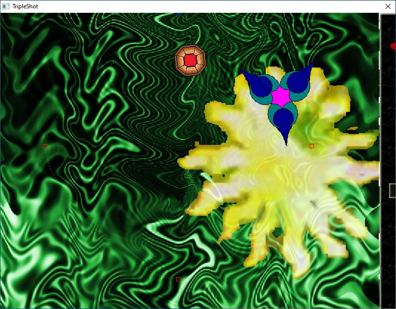

Triple Shot (2009)

Authors
Chris Boguslawski, Artun Kircali
Description
2D top-down shooter. Press "Instructions" on the main menu for story and gameplay information.
Downloads
Compatibility notes.
Confirmed working on Windows 10. This is a fixed version.